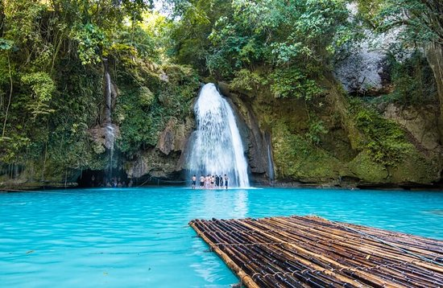

Chasing Waterfalls and Volcanoes: An Adventure in the Philippines
Date Uploaded: 16/09/2024
Get your adrenaline pumping! Join me on an adventure through the breathtaking landscapes of the Philippines,
where towering waterfalls cascade into crystal-clear pools and active volcanoes offer awe-inspiring views.
From hiking through lush rainforests to exploring volcanic craters, this blog will fuel your wanderlust. The
Philippines, an archipelago of over 7,000 islands, is a paradise for adventure seekers. Beyond its pristine
beaches and turquoise waters lies a tapestry of diverse landscapes, from towering mountains to active
volcanoes, waiting to be explored. This blog will take you on a journey through some of the most
breathtaking and adventurous destinations in the Philippines, where you can chase waterfalls, conquer
volcanoes, and immerse yourself in the heart of nature. The Philippines is home to countless waterfalls,
each offering a unique and unforgettable experience. From cascading waterfalls plunging into crystal-clear
pools to hidden waterfalls tucked away in lush rainforests, the country offers a wide range of options for
adventure enthusiasts. This iconic waterfall in Cebu is a must-visit for any adventure seeker. The turquoise
waters of the Kawasan Falls cascade down three tiers, creating a series of natural pools perfect for
swimming, cliff jumping, and canyoneering. You can hike through the lush rainforest to reach the falls, or
take a thrilling canyoneering tour that includes ziplining, rappelling, and swimming through the falls.
Hidden away in the lush rainforests of Siquijor, Tinago Falls is a true gem. The waterfall plunges into a
deep, emerald-green pool surrounded by towering cliffs. You can hike through the jungle to reach the falls,
or take a refreshing dip in the cool waters. Located in the heart of Bukidnon, Ditumabo Mother Falls is the
tallest waterfall in Mindanao. The waterfall cascades down a sheer cliff face, creating a breathtaking
spectacle. You can hike through the rainforest to reach the falls or take a thrilling zipline ride across
the canyon.
The Philippines is also home to several active volcanoes, offering a unique and awe-inspiring adventure.
From hiking to the summit of active volcanoes to exploring volcanic craters, the country offers a variety of
options for those seeking a thrilling adventure. Taal Volcano, located in the province of Batangas, is one
of the most active volcanoes in the Philippines. You can take a boat ride to the island, hike to the rim of
the crater, and witness the power of nature firsthand. The views from the summit are simply breathtaking,
showcasing the vast expanse of the lake and the surrounding countryside. Mayon Volcano, known for its
perfect cone shape, is a breathtaking sight. You can hike to the summit of the volcano, although it is a
challenging trek. The views from the summit are truly awe-inspiring, offering panoramic views of the
surrounding landscape. Mount Apo, the highest mountain in the Philippines, is a popular destination for
hikers and climbers. The trek to the summit is challenging but rewarding, offering stunning views of the
surrounding mountains and rainforests. The Philippines is home to a diverse array of rainforests, each
offering a unique and unforgettable experience. From hiking through dense jungles to exploring hidden
waterfalls, the country offers a variety of options for nature lovers. Mount Pulag, the third highest
mountain in the Philippines, is a popular destination for hikers. The trek to the summit is challenging but
rewarding, offering stunning views of the surrounding mountains and rainforests. Mount Kitanglad, a UNESCO
World Heritage Site, is a biodiversity hotspot. You can hike through the rainforest, explore hidden
waterfalls, and encounter a wide variety of flora and fauna. The Palawan rainforest is home to a diverse
range of wildlife, including the endangered Palawan peacock pheasant. You can hike through the rainforest,
explore caves, and swim in hidden waterfalls.
The Philippines is a country that offers a unique and unforgettable adventure for every traveler. From
chasing waterfalls to conquering volcanoes, the country offers a variety of options for those seeking a
thrilling and rewarding experience. So, pack your bags, grab your hiking boots, and prepare to be amazed by
the breathtaking landscapes and adventurous opportunities that await you in the Philippines. Research your
chosen destinations and plan your itinerary in advance. Pack comfortable and durable clothing and footwear
suitable for hiking and outdoor activities. Bring plenty of water and snacks, especially during long hikes.
Be aware of your surroundings and take necessary precautions to avoid injuries. Leave no trace and respect
the environment. Consider hiring a local guide, especially for challenging hikes and treks. Be aware of
weather conditions and plan your activities accordingly. Pack a first-aid kit and know how to use it.
Embrace the adventure and enjoy the beauty of the Philippines. The Philippines is a country that will leave
you breathless, both from the stunning landscapes and the exhilarating adventures that await. So, get your
adrenaline pumping and join me on a journey through the heart of the Philippines, where waterfalls cascade,
volcanoes rise, and adventure awaits.